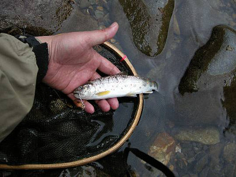
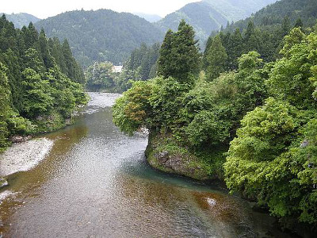

釣行日誌 故郷編
2009/5/16 五月の雨に誘われて
週末の天気予報を見ると、雨時々曇りとなっていた。今時は、アユの稚魚が放流されている頃なので、久しぶりに山奥の本流をルアーで狙ってみようかと思い立った。
朝三時に起き出して釣り具一式を積み込み、高速道路を西へ走る。その効果については賛否両論あるけれど、ETCで高速料金が安くなるのは単純にありがたい。
インターを降りてすぐの、国道沿いのコンビニで朝食を買いがてら、目的の川の遊漁券は置いてないかと尋ねたところ、残念ながら置いてないとのことであった。仕方がないので日中になってから遊漁券を扱っている喫茶店で買うことにして、釣り場へ向かう。どの区間で釣り始めるか迷ったものの、昔良い思いをしたポイントに自然に足が向いた。
対岸の集落へ通じている橋を渡り、空き地に車を停める。車中で朝食のおにぎりを二つ食べて、ウェーダーを履き、雨具を着込むと朝六時である。昔なじみの藪をかき分けて河原へ降りる。実に15年ぶりの再訪である。ロッドとリールをセットして、ルアーは実績のあるコンデックスの金色8gを結ぶ。曇天からは小雨が降ったり止んだりで、申し分の無い天気である。
第一投目は、以前兄と来たときに、兄がプラグの大きいやつで良型のアマゴを釣った、大岩の淵尻にキャストした。この川の本流は、淵は淵、瀬は瀬とポイントがはっきりしており、規模も大きいのでルアー釣りには良い渓相である。しかし、瀬はザラ瀬で、石がほとんど無いので、狙いは淵の深みと流れ込みになる。淵尻を五、六回攻めて見たもののアタリは無く、深みに狙いを移した。淵の真ん中もアタリが無く、流れ込みからやや沈ませて、一番の深みにスプーンが通る頃にブルブルとアタリがあった。ソレッと合わせると、懐かしい手応えと共に、小さなアマゴが上がってきた。いやぁ、狙い通りのポイントで釣った最初の１尾は、何ものにも代え難い喜びがある。

そっとフックを外してリリースし、次のポイントへ向かう。今釣った大岩の上流側、岸沿いにちょっとしたポケットがあったので、念のためにスプーンを振り込んでみた。ポケットが瀬に変わる辺りでコツンと反応があり、最初の１尾には及ばないが、きれいなアマゴが釣れた。狙い通りに魚が出るのは本当に気分が良い。
上流へ遡行して行くと、屏風のような岸壁のある大淵に出た。昔は本当に大きくてまん丸の形をした淵だったが、流れてきた土砂で淵が三分の一ほど埋まってしまっており、深みが二分割されていた。淵尻の瀬を渡って対岸から攻めようかと思ったが、下流側の深みを最初に攻めてから中央の所を渡ろうと決めて、数回キャストしてみた。しかし、何の反応もなかったので、中央部を渡りかけた。すると、ウェストハイのウェーダーではぎりぎりの深さとなってしまい、戻ろうかどうしようか本当に迷ったが、少し浸水しただけでなんとか渡りきることができた。しかし、中に入った水はとても冷たく、雨具を着ていても震えてきた。
なおも遡行は続き、左岸側にある藪下の深みを狙ってみた。中央部で１尾、流れ込みで１尾、小さいが元気のあるアマゴが釣れた。テンポ良く釣れたのでますます気分が良くなった。しかし、体長15cmほどのアマゴが8gの大きなスプーンに食い付くのが不思議である。藪下の深みを越えると、いよいよ通らずの廊下に出てしまい、ここで引き返すのかと思って崖沿いに数歩戻ってみると、崖の上からロープが下がっている。誰か、この崖を高巻きするために支度をしておいてくれたらしい。ありがたいことに、適当な間隔で、ロープにはコブまで作ってある。ロープに助けられ、ロッドに気をつけながらよいしょと崖を登り、通らずを越えた。しばらく林の中の小道を歩き、再び河原に降りると、国道下の折れ曲がった長いトロ淵に出た。ここも有望なポイントである。
淵の尻から中央部、流れ込みの深みへと、カウントダウンを織り交ぜながら、表層・中層・底層と丁寧に探る。流れ込みの荒い流れの中を、ゆっくりスプーンを通してくると、魚影が二つ勢いよく追って来るのが見えた。大きい。これはこれはと期待しながら少し間を置いて次のキャストをすると、沈み始めたスプーンにガツンと当たった。すかさず合わせてリールを巻き取る。緩めにセットしてあるドラグがジリジリと鳴る。手元まで来てからしばらく粘っていたがとうとうネットに収まった。今日一番の大きさである。雨が強くて写真を撮れないのが残念だった。久しぶりに訪れたのだが、本流の力強いアマゴが健在で嬉しかった。

国道の橋の下の深みでは何も反応が無く、その上の廊下でも魚影が無かったので、廊下の通らずに出る前に国道に上がることにした。十一時を過ぎ、喫茶店も開いている時間になったので、トコトコと歩いて車まで戻り、入漁券を買いに行った。喫茶店に入ると、カウンターに女性のマスターが居て、アマゴの日釣り券を下さいと言うと、
「今日は、こんな天気で、アマゴ釣りには良い天気ですねぇ」
とおっしゃった。さすがに地元の人は分かっていらっしゃる。喫茶店を出ると、となりに土産物と蕎麦の店があるのを見つけた。体も冷えていたし、蕎麦には目がないので、ウェーダーをいったん脱いで昼食にした。蕎麦はざるの方が好きなのだが、寒かったのでかけそばを頼んだ。熱い蕎麦で元気が出て、さぁ第二ラウンドである。
朝方釣っているときに、カゲロウが飛んでいるのを見ていたので、ここはひとつフライで狙ってみましょうかと思い、村営住宅の前の荒瀬を狙うことにしてそちらへ移動した。小雨の中、再びウェーダーを履き、フライの道具を持って河原へ向かう。昔来た時にあった田んぼは休耕田になってしまっており、草ぼうぼうの、かつての畦道を通って河原へ降りる。しばらく偵察すると、荒瀬の深みが平瀬に変わる辺りで、ライズが見えたような気がした。
『むむっ！』
いきなりボルテージが上がり、抜き足差し足で下流へ向かう。さらに偵察すると、やはりライズである。どきどきと高鳴る心臓を押さえながら、ロッドを継なぐ。リールをセットして、下から順番でガイドにラインを通してゆく。この瞬間のときめきは、初めてアマゴを釣った小学校三年生から、何も変わっていない。ところが、フライを結ぶ段になって、とたんに現実が眼前に立ちはだかる。目のピントが合わず、フックのアイにティペットを通しにくいのだ。近づければぼやけるし、遠ざければアイが見えない。歳はとりたくないものだ。
この間、クリント・イーストウッドの「グラン・トリノ」を見てきたものだから、よけいに老いることの意味とか、人生の終わりとか、湿っぽい考えが頭をよぎっていく。竹内まりやの歌ではないが、この先、何回こんな胸のときめきを味わうことができるだろうか。人生にいくつかのガイドがあるとすれば、自分の人生は何番目のガイドまでラインが通っているのか？
そんなことを考えるにはまだ早すぎるとも思うが、先のことは誰にも分からない。
苦労しながらフライを結び終え、ライズのあったポイントのやや上流にキャストする。止まることのない時の流れに乗って、メイフライ・パラシュートが、ライズの方へとゆっくり流れてゆく。
釣行日誌 故郷編 目次へ
サイトマップ
ホームへ
お問い合わせ